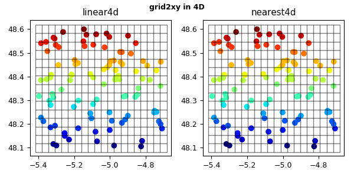

3.5.6.23. test_regrid_grid2xy.py – Test grid2xy() with interpolation in X, Y, Z and T¶

"""Test :func:`~vacumm.misc.grid.regridding.grid2xy` with interpolation in X, Y, Z and T"""
# %% Inits
np = 100
nx = 20
ny = 15
nz = 10
nt = 5
lon0 = -5.4
lon1 = -4.7
lat0 = 48.1
lat1 = 48.6
dep0 = -200
dep1 = 0
time0 = "2008-08-15 07:00"
time1 = "2008-08-15 16:00"
ne = 4
nez = 2
# %% Imports
from vcmq import (N, MV2, code_file_name, os, P, create_lon, create_lat, create_dep,
create_time, lindates, create_axis, reltime, grid2xy,
comptime, set_grid, rotate_grid, add_grid)
# %% Rectangular xyzt with 1d z data and coords
# - data
lon = create_lon(N.linspace(lon0, lon1, nx))
lat = create_lat(N.linspace(lat0, lat1, ny))
dep = create_dep(N.linspace(dep0, dep1, nz))
time = create_time(lindates(time0, time1, nt))
extra = create_axis(N.arange(ne), id='member')
data = N.resize(lat[:], (ne, nt, nz, nx, ny)) # function of y
data = N.moveaxis(data, -1, -2)
#data = N.arange(nx*ny*nz*nt*ne, dtype='d').reshape(ne, nt, nz, ny, nx)
vi = MV2.array(data,
axes=[extra, time, dep, lat, lon], copy=False,
fill_value=1e20)
N.random.seed(0)
xo = N.random.uniform(lon0, lon1, np)
yo = N.random.uniform(lat0, lat1, np)
zo = N.random.uniform(dep0, dep1, np)
to = comptime(N.random.uniform(reltime(time0, time.units).value,
reltime(time1, time.units).value, np),
time.units)
# %% Rectangular xyzt with 1d z
vo = grid2xy(vi, xo=xo, yo=yo, zo=zo, to=to, method='linear')
von = grid2xy(vi, xo=xo, yo=yo, zo=zo, to=to, method='nearest')
assert vo.shape==(ne, np)
N.testing.assert_allclose(vo[0].asma(), yo)
kwp = dict(vmin=vi.min(), vmax=vi.max())
P.figure(figsize=(6, 3))
P.subplot(121)
P.scatter(xo, yo, c=vo[0], cmap='jet', **kwp)
add_grid(vi.getGrid())
P.title('linear4d')
P.subplot(122)
P.scatter(xo, yo, c=von[0], cmap='jet', **kwp)
add_grid(vi.getGrid())
P.title('nearest4d')
P.figtext(.5, .98, 'grid2xy in 4D', va='top', ha='center', weight='bold')
P.tight_layout()
P.savefig(code_file_name(ext='.png'))
P.close()
# %% Reversed z and y
vi_revz = vi[:, :, ::-1, ::-1, :]
vo = grid2xy(vi_revz, xo=xo, yo=yo, zo=zo, to=to, method='linear')
N.testing.assert_allclose(vo[0].asma(), yo)
# %% Rectangular xyt only
vi_xyt = vi[:, :, 0]
vo = grid2xy(vi_xyt, xo=xo, yo=yo, to=to, method='linear')
assert vo.shape==(ne, np)
N.testing.assert_allclose(vo[0].asma(), yo)
# %% Rectangular xy only
vi_xy = vi[:, 0, 0]
vo = grid2xy(vi_xy, xo=xo, yo=yo, method='linear')
assert vo.shape==(ne, np)
N.testing.assert_allclose(vo[0].asma(), yo)
# %% Rectangular xyzt with 5d z
zi_5d = N.resize(dep[:], (nez, nt, ny, nx, nz))
zi_5d = N.moveaxis(zi_5d, -1, 2)
vo = grid2xy(vi, zi=zi_5d, xo=xo, yo=yo, zo=zo, to=to, method='linear')
assert vo.shape==(ne, np)
N.testing.assert_allclose(vo[0].asma(), yo)
# %% Reversed 5d z
zi_5d_rev = zi_5d[:, :, ::-1, :, :]
vo = grid2xy(vi_revz, zi=zi_5d_rev, xo=xo, yo=yo, zo=zo, to=to, method='linear')
N.testing.assert_allclose(vo[0].asma(), yo)
# %% Zi present but not requested
vo = grid2xy(vi, xo=xo, yo=yo, to=to, method='linear')
assert vo.shape==(ne, nz, np)
N.testing.assert_allclose(vo[0, 0].asma(), yo)
# Zi and Ti present but not requested
vo = grid2xy(vi, xo=xo, yo=yo, method='linear')
assert vo.shape==(ne, nt, nz, np)
N.testing.assert_allclose(vo[0, 0, 0].asma(), yo)
# %% Curvilinear xy only
vi_xyc = vi[:, 0, 0]
gridc = rotate_grid(vi_xyc.getGrid(), 30)
set_grid(vi_xyc, gridc)
vi_xyc[:] = N.ma.resize(gridc.getLatitude()[:], vi_xyc.shape)
vo = grid2xy(vi_xyc, xo=xo, yo=yo, method='linear')
assert vo.shape==(ne, np)
#N.testing.assert_allclose(vo[0], yo) # exact?